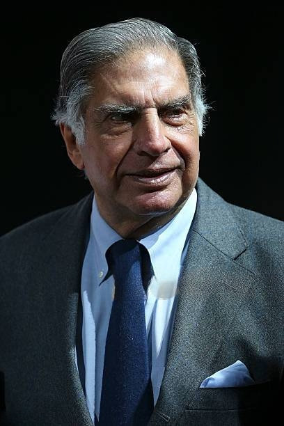

“Ups and downs in life are very important to keep us going because a straight line, even in an ECG. means we are not alive.”

Ratan Naval Tata (born 28 December 1937) is an Indian industrialist, philanthropist, and a former chairman of Tata Sons. He was also chairman of Tata Group, from 1990 to 2012, and again, as interim chairman, from October 2016 through February 2017, and continues to head its charitable trusts. He is the recipient of two of the highest civilian awards of India, the Padma Vibhushan (2008) and Padma Bhushan (2000). He is well known for his business ethics and philanthropy. In 1991, he was named chairman of Tata Sons. Under Tata's leadership, the Tata Group expanded its global reach and diversified its businesses. He also oversaw the acquisition of several major companies, including Jaguar Land Rover and Tetley. Tata is also known for his commitment to social responsibility. He has donated billions of dollars to charity and founded several philanthropic organizations. Tata is a recipient of numerous awards, including the Padma Bhushan, the Padma Vibhushan, and the Legion of Honor. He is also a member of the World Economic Forum's International Business Council.